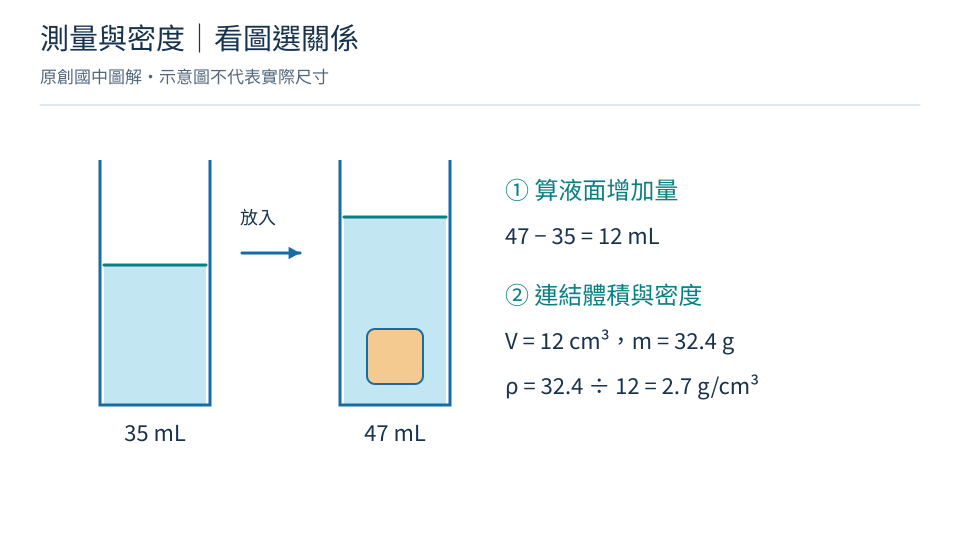
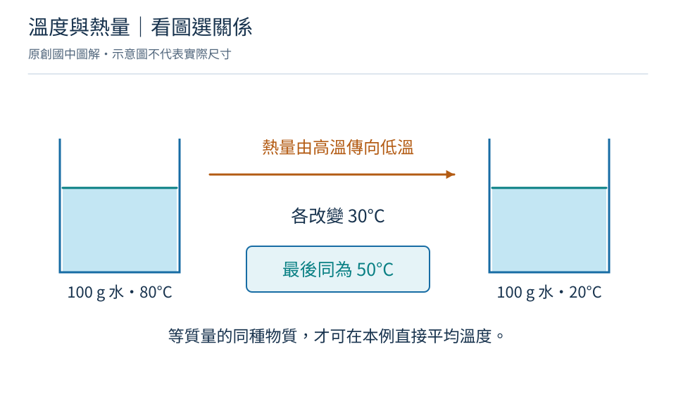

關係 01
密度
ρ = m ÷ V
ρ：密度 g/cm³；m：質量 g；V：體積 cm³
什麼時候用：同一均勻物質，溫度與狀態相同時比較。
展開例題與解題步驟
金屬質量 54 g，體積 20 cm³，密度是多少？
- 選用 ρ = m ÷ V。
- 54 ÷ 20 = 2.7，單位 g/cm³。
2.7 g/cm³
小心：切成兩半不會讓密度減半。
回課程讀完整觀念 →隨身小章節 / 國中物理・化學
不把一整頁公式硬背起來。先找情境、確認條件，再帶著單位算一次。
30 張關係卡 ／ 12 幅圖解 ／ 8 種互動計算
顯示 30 張關係卡
先確認量與單位，再決定要除以誰。

關係 01
ρ = m ÷ V
ρ：密度 g/cm³；m：質量 g；V：體積 cm³
什麼時候用：同一均勻物質，溫度與狀態相同時比較。
金屬質量 54 g，體積 20 cm³，密度是多少？
2.7 g/cm³
小心：切成兩半不會讓密度減半。
回課程讀完整觀念 →關係 02
物體體積 = 放入後讀數 − 原讀數
1 mL = 1 cm³；兩次讀數都用 mL
什麼時候用：物體完全浸沒、不吸水、不溶解、無附著氣泡；水不溢出。
水位由 35 mL 升到 47 mL，物體體積？
12 cm³
小心：只浸入一部分時，量到的是浸入部分的體積。
回課程讀完整觀念 →看清楚分母是溶液，不是溶劑；反應前後追蹤全部物質。

關係 03
濃度 = 溶質質量 ÷ 溶液質量 × 100%
溶液質量 = 溶質質量 + 溶劑質量；質量用同一單位
什麼時候用：溶質已完全溶解，沒有未溶固體混入計算。
10 g 食鹽完全溶在 90 g 水中，濃度？
10%
小心：不是 10 ÷ 90；分母包含食鹽與水。
回課程讀完整觀念 →關係 04
原溶液質量 × 原濃度 = 新溶液質量 × 新濃度
濃度同用百分數，或同用小數；質量用 g
什麼時候用：只加水，溶質沒有增減、析出或反應。
100 g、20% 食鹽水加 100 g 水後，濃度？
10%
小心：質量百分濃度不能直接套用體積相乘。
回課程讀完整觀念 →關係 05
反應前總質量 = 反應後總質量
質量單位一致；包含氣體與剩餘反應物
什麼時候用：比較完整系統，沒有物質進出。
密閉容器內原有 25 g 物質，反應後固液共 22 g，另有多少氣體？
3 g
小心：開口容器的秤重變小，可能只是氣體逸出。
回課程讀完整觀念 →關係 06
相對分子質量 = 各原子相對原子質量的總和
相對值沒有單位；採題目給的相對原子質量
什麼時候用：先讀化學式下標；此處用分子物質作例子。
H = 1、O = 16，H₂O 的相對分子質量？
18（無單位）
小心：不是一個水分子重 18 g；下標不是反應係數。
回課程讀完整觀念 →關係 07
反應質量依題目給定比例換算
此處為質量比，不是化學反應式的係數比
什麼時候用：題目已給完全反應的質量比；另一反應物足量。
A 與 B 按質量比 2：3 生成 C。4 g A 恰與 B 完全反應，C 幾克？
10 g
小心：反應式係數比不能直接當作質量比。
回課程讀完整觀念 →路程不等於位移，速度變化才用來求加速度。

關係 08
平均速率 = 總路程 ÷ 總時間；平均速度 = 位移 ÷ 總時間
路程與位移用 m；時間 s；結果 m/s，速度須含方向
什麼時候用：一維運動先選正方向；總時間包含停留時間。
向東走 60 m 再向西走 20 m，共花 40 s，兩者分別是多少？
平均速率 2 m/s；平均速度 1 m/s 向東
小心：往返原點，平均速度為 0，平均速率不一定為 0。
回課程讀完整觀念 →關係 09
a = (v末 − v初) ÷ Δt
a：m/s²；v：帶正負號的速度 m/s；Δt：時間 s
什麼時候用：一維運動；等加速度時，此值也等於各時刻加速度。
向東為正，速度由 +2 變 +8 m/s，用時 3 s，平均加速度？
+2 m/s²（向東）
小心：負加速度不一定是減速，要和速度方向一起看。
回課程讀完整觀念 →箭頭表示力；力臂是支點到作用線的垂直距離。

關係 10
F合 = ma
F合：合力 N；m：質量 kg；a：加速度 m/s²
什麼時候用：本頁限單一物體的一維簡單情況；質量固定。
2 kg 小車所受水平合力 6 N，加速度？
3 m/s²，方向與合力相同
小心：不能只代入其中一個力，漏掉其他同方向或反方向的力。
回課程讀完整觀念 →關係 11
重量 = mg
重量 N；m：質量 kg；g：重力加速度 m/s²
什麼時候用：地表附近；g 用題目給值，本例取 10 m/s²。
質量 3 kg 的物體，重量為多少？
30 N
小心：kg 是質量單位；N 是力的單位。換地點質量不因而改變。
回課程讀完整觀念 →關係 12
p = F垂直 ÷ A
p：Pa；F垂直：垂直作用力 N；A：受力面積 m²
什麼時候用：使用接觸面的平均壓力；力取垂直於表面的分量。
20 N 垂直作用在 0.01 m² 面積上，壓力？
2000 Pa
小心：1 cm² = 0.0001 m²，不是 0.01 m²。
回課程讀完整觀念 →關係 13
浮力 = 排開流體的重量
力用 N；本例流體為水
什麼時候用：用排開的水，不是物體全部體積；限簡單推算。
物體浸水排開 0.2 kg 水，g = 10 m/s²，浮力？
2 N
小心：浮力不一定等於物重；自由漂浮靜止時才可這樣比較。
回課程讀完整觀念 →關係 14
力矩 = 力 × 力臂；F₁d₁ = F₂d₂
力 N；力臂 m；力矩 N·m
什麼時候用：兩側轉動效果相反且槓桿平衡；忽略桿重或桿重不產生力矩。
左端 20 N、力臂 0.3 m；右端力臂 0.6 m，需多少向下的力？
10 N
小心：力臂是到力作用線的垂直距離，不一定等於整根桿長。
回課程讀完整觀念 →力的方向、移動方向與時間，決定該用哪個關係。

關係 15
W = Fs（同方向）
W：功 J；F：定力 N；s：位移 m
什麼時候用：力與位移同方向且力大小固定；垂直時該力作功為 0。
以 10 N 水平定力，將物體水平推動 3 m，這個力作功多少？
30 J
小心：人很累不代表對物體作功；沒有位移時，該力作功為 0。
回課程讀完整觀念 →關係 16
P = W ÷ t
P：功率 W（瓦特）；W：功 J；t：時間 s
什麼時候用：比較一段時間內的作功快慢。
機器在 5 s 作功 100 J，平均功率？
20 W
小心：公式的 W 代表功；答案中的 W 則是瓦特單位。
回課程讀完整觀念 →關係 17
力學能 = 動能 + 位能
能量用 J；此卡先練習加總與轉換
什麼時候用：忽略摩擦且只有重力等保守力作功時，力學能才保持不變。
某時動能 6 J、位能 14 J；之後位能 5 J，忽略損耗，動能多少？
15 J
小心：有摩擦時力學能可變為熱能，但完整系統的總能量仍守恆。
回課程讀完整觀念 →熱量是傳遞的能量，溫度不是熱量。

關係 18
Q = mcΔT
Q：cal；m：g；c：cal/(g·°C)；ΔT：溫度改變 °C
什麼時候用：沒有狀態改變、比熱視為固定，且 Q 是物體實際吸收的熱量。
100 g 水由 20°C 升到 30°C，c = 1 cal/(g·°C)，吸熱？
1000 cal
小心：熔化或沸騰期間不能只靠此式計算全部吸熱。
回課程讀完整觀念 →關係 19
熱物放出的熱量 = 冷物吸收的熱量
同種物質且比熱相同時：m熱(T熱 − T末) = m冷(T末 − T冷)
什麼時候用：無熱散失、無狀態改變，忽略容器吸熱。
各 100 g 的 80°C 與 20°C 水混合，最後溫度？
50°C
小心：只有同物質、等質量等條件下，才可直接平均兩個溫度。
回課程讀完整觀念 →關係 20
T華氏 = 1.8 × T攝氏 + 32
T華氏用 °F；T攝氏用 °C
什麼時候用：換算溫度讀數；僅供查閱，不把換算當作本章重點。
25°C 相當於幾 °F？
77°F
小心：溫差換算只乘 1.8，不再加 32。
回課程讀完整觀念 →先看波形或光路，再判斷距離和角度。

關係 21
v = fλ
v：波速 m/s；f：頻率 Hz；λ：波長 m
什麼時候用：規律週期波；波速由介質與條件決定。
頻率 170 Hz 的聲波，聲速 340 m/s，波長？
2 m
小心：同一介質、條件固定時，提高頻率不表示波速也變大。
回課程讀完整觀念 →關係 22
d = vt ÷ 2
d：到反射面的距離 m；v：聲速 m/s；t：往返時間 s
什麼時候用：發聲與接收位置相同，聲音往返同一路徑。
拍手後 0.4 s 聽到回聲，聲速 340 m/s，距牆？
68 m
小心：若題目給的是單程時間，就不應再除以 2。
回課程讀完整觀念 →關係 23
入射角 = 反射角
角度皆從法線量起，以 ° 表示
什麼時候用：光在平面鏡反射；入射線、法線與反射線在同一平面。
光線與鏡面夾 30°，反射角多少？
60°
小心：法線與鏡面垂直；不是從鏡面量入射角。
回課程讀完整觀念 →關係 24
物到鏡的距離 = 像到鏡的距離
距離沿鏡面的垂直方向量，使用同一單位
什麼時候用：限平面鏡；像是虛像，與物體等大。
人站在鏡前 1.5 m，人與像相距多遠？
3 m
小心：鏡後沒有真的人；不可把平面鏡關係套到凸透鏡。
回課程讀完整觀念 →先辨認串聯或並聯；用電量不是功率。

關係 25
V = IR
V：電壓 V；I：電流 A；R：電阻 Ω
什麼時候用：限符合歐姆定律的導體，溫度等物理條件固定。
電阻 6 Ω，兩端電壓 12 V，電流？
2 A
小心：燈泡溫度變化會改變電阻，不能一概視為固定 R。
回課程讀完整觀念 →關係 26
R總 = R₁ + R₂；I各處相同；V總 = V₁ + V₂
電阻 Ω；電流 A；電壓 V
什麼時候用：單一路徑，理想導線；忽略電池內電阻。
2 Ω 與 4 Ω 串聯接 12 V，電流？
2 A
小心：串聯電壓不一定平均分；電阻不同，分得電壓也不同。
回課程讀完整觀念 →關係 27
1/R總 = 1/R₁ + 1/R₂；V各支路相同；I總 = I₁ + I₂
電阻 Ω；電流 A；電壓 V
什麼時候用：各電阻接在同兩個節點；理想導線、忽略電池內電阻。
6 Ω 與 3 Ω 並聯接 6 V，總電流？
3 A（總電阻 2 Ω）
小心：並聯總電阻比各支路電阻都小，不是相加。
回課程讀完整觀念 →關係 28
P = VI
P：W；V：V；I：A；電阻元件可再用 P = I²R = V²/R
什麼時候用：本頁為穩定電壓與電流的簡單情況；變形式需同時符合 V = IR。
某電器電壓 12 V、電流 2 A，電功率？
24 W
小心：實際電壓不是額定電壓時，不能直接沿用額定功率。
回課程讀完整觀念 →關係 29
E = Pt；1 度 = 1 kWh
P 用 W、t 用 s 時，E 用 J；P 用 kW、t 用 h 時，E 用 kWh
什麼時候用：功率在這段使用時間內視為固定。
1000 W 電器使用 2 小時，用電幾度？
2 度（7,200,000 J）
小心：kW 是功率；kWh 才是電能。1 kWh = 3,600,000 J。
回課程讀完整觀念 →關係 30
I = Q ÷ t
I：A；Q：通過截面的電量 C；t：s
什麼時候用：計算一段時間的平均電流；Q 在這裡不是熱量。
4 秒內有 12 C 電量通過截面，平均電流？
3 A
小心：金屬中的電子移動方向，與約定的電流方向相反。
回課程讀完整觀念 →找不到符合的內容，請清除篩選或換個關鍵字。
換個數字，看看關係
這裡使用固定的單位和理想化條件。輸入你想比較的數值，計算後會顯示代入過程。
6 題觀念挑戰
不計時、不排名。每題先作答，再看原因。
尚未作答